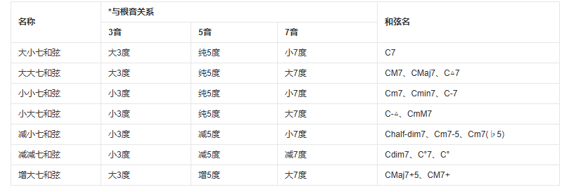

把音程叠起来
三个或更多音同时发声，音程关系便组织成和弦。
先掌握三和弦，再扩展到七和弦，最终尝试写出和弦连接。
我们从四种 C 三和弦开始
三和弦由根音、三度音和五度音组成。大、小、增、减的差别来自两段三度的排列。例如，我们从根音C开始依次依次找到大三度的E音，然后再从E开始找到小三度的G音，便构成了C大三和弦。
读懂和弦标记
根音加类型即可快速标记：C 是 C 大三和弦，Cm 是C小三和弦，Caug 是C增三和弦，Cdim 是C减三和弦。用同一套规则可以推断其他根音。和之前一样，你可以在下面的音轨中试一试！
按下按钮开始八题和弦练习。
按下按钮开始八题七和弦练习。
从三和弦到七和弦
在三和弦上再叠加一次音程，就得到七和弦，例如在一个大三和弦上叠加一个根音的小七度音，就能得到大小七和弦。它们的色彩和导向性更丰富，常会强调七音和三音；必要时可省略五音，保持声音清晰。
当然你会发现，光是同一个根音的三个音程排列组合就有很多种，分别对应不同的七和弦类型，它们的命名由三和弦和七度音的性质决定，例如大三和弦+大七度，就被称作大大七和弦，如下面的表格所示。

像这样排列出所有的组合，那将是一个不小的列表。所以我们一般只会记住最常使用的五种，包括大七和弦、属七和弦、小七和弦和半减七和弦和减七和弦。
这些名称都是为了实际简化使用，详细的命名规则参照上方的图片。你可能会注意到，减七和弦中出现了一个减七度，它比小七度还要少一个半音，为了音名不变，在B上标记了重降号（B𝄫），意为降低两个半音。
另外，因为四个音的音响效果会很繁杂，而七和弦又比较强调三音和七音，但要保证根音的存在，所以在实际中，我们有时会省略五音，以简化和弦的声音结构。需要格外注意的是，属七和弦拥有强烈的解决倾向，这致使它经常被使用，所以你最好记住它的结构。
掌握三和弦和七和弦已足以完成多数创作。九、十一、十三和弦会在七和弦上加入扩展音，也常省略未被强调的音。
和弦听辨
通过听辨巩固和弦性质。这个练习更考验基础听觉，适合反复完成。
在学习了和弦相关知识后，你就可以更好地实践DAW创作了。